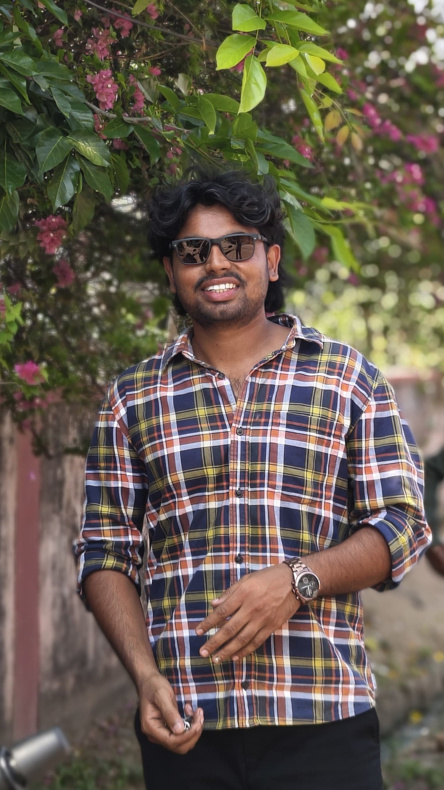

years shaping enterprise CX
Building better enterprise experiences
Systems that feel
simple.
I'm Srikanth Pettem, an Oracle Fusion CX Consultant who turns complex operations into useful, intuitive experiences through automation, analytics, and AI.

CURRENTLYFusion CX ConsultantOracle · Hyderabad, India
Automation is a form
of good service.
of good service.
01What I bring
I build the connective tissue between people, process, and platform.
For over five years, I have worked where customer experience meets enterprise technology - guiding Oracle Fusion CX implementations from early conversations to stable, scalable outcomes.
My approach is equal parts structured and curious: understand the real business problem, design the cleanest path through it, then make the solution easier to run tomorrow than it is today.
More about how I thinkglobal projects delivered
faster root-cause analysis
productivity lift with AI
02Core expertise
Not just configuration.
Capability.
Customer
experience
Designing sales and service operations that are intuitive for the people who use them every day.
- Fusion Sales & Service
- Lead & opportunity management
- Service requests & access management
Automation
& integration
Connecting systems, removing friction, and giving teams more room for work that needs human judgment.
- Oracle Integration Cloud
- Groovy scripting & workflows
- REST / SOAP APIs
Insight
& intelligence
Turning operational data into a clear signal - and using AI where it can add practical value.
- OTBI / OBIEE analytics
- Oracle AI Agent Studio
- Redwood UI & VBCS
ORACLE JET ✦ POSTGRESQL ✦ WEB TECHNOLOGY ✦ SYSTEM DESIGN ✦ TECHNICAL RESEARCH ✦ ORACLE CPQ ✦ ELOQUA ✦
03Selected experience
A career defined by
useful outcomes.
2023 — now
Oracle · Hyderabad, India
Staff Consultant
Building more dependable, more human Fusion CX experiences across sales, service, integration, diagnostics, and AI adoption.
40% less navigation time90% faster RCA50% productivity lift
Redwood UI, AI agents, OIC integrations, diagnostic dashboards, quarterly release readiness, and mentoring.
2021 — 2023
Innovacx · Hyderabad, India
Enterprise Solutions Specialist
Helped carry implementations from pre-sales and discovery through configuration, data migration, go-live, and support.
Custom audit objects, service automation, secure role matrices, reporting, integrations, and performance tuning.
2021
Innovacx · Hyderabad, India
Software Engineer Intern
First hands-on experience of enterprise solutions and collaborative delivery.
Recognised learning
OCI 2025 Generative AI ProfessionalFusion AI Agent Studio FoundationsOracle CX Process EssentialsRedwood Application Developer
04Beyond the build
Clear thinking is a
creative practice.
I am an engineer by choice, but not only an engineer. Writing teaches me to make an idea precise. Photography trains me to notice. Chess keeps me patient. Together, they shape how I approach systems and the people inside them.
LeadershipCuriosityCommunicationAccountabilityAdaptabilityProblem solving
Open to meaningful conversations
Let’s make the
complex feel clear.
srikanth.pettem@outlook.com
Based in Telangana, India
Available with a 30-day notice period